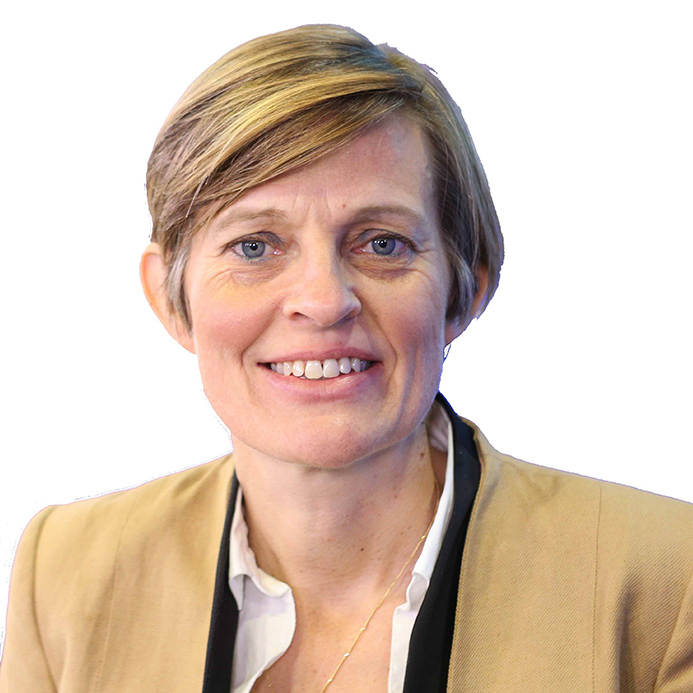
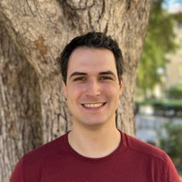
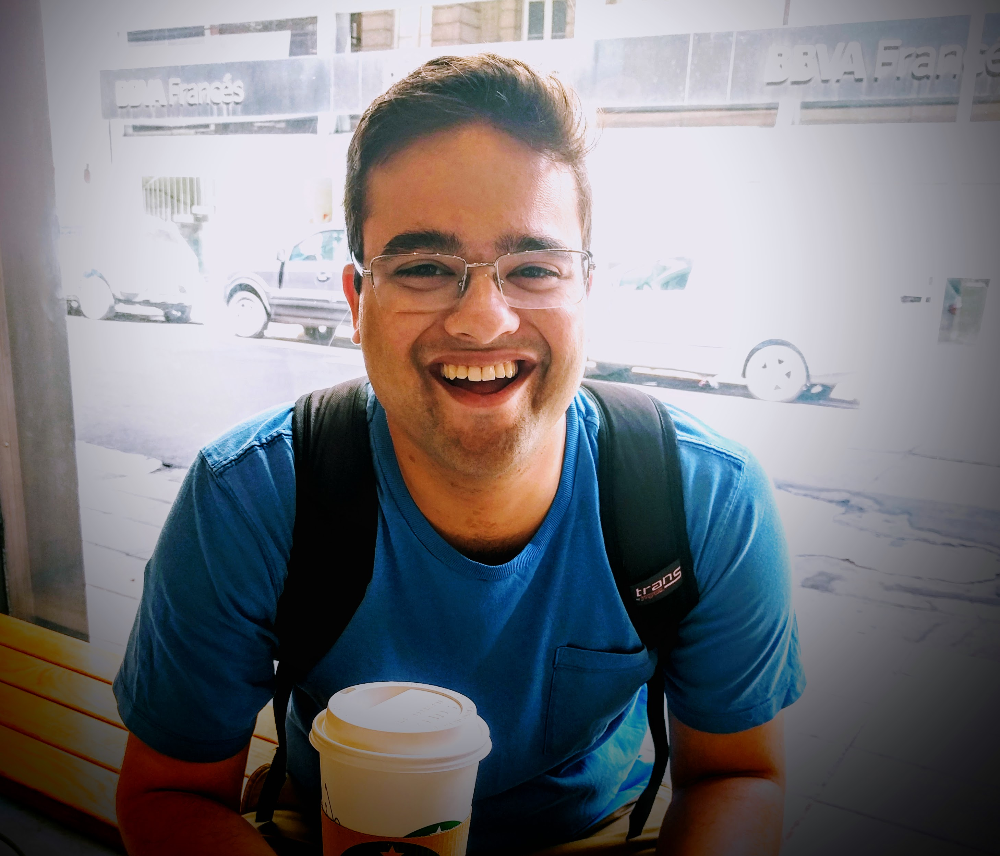
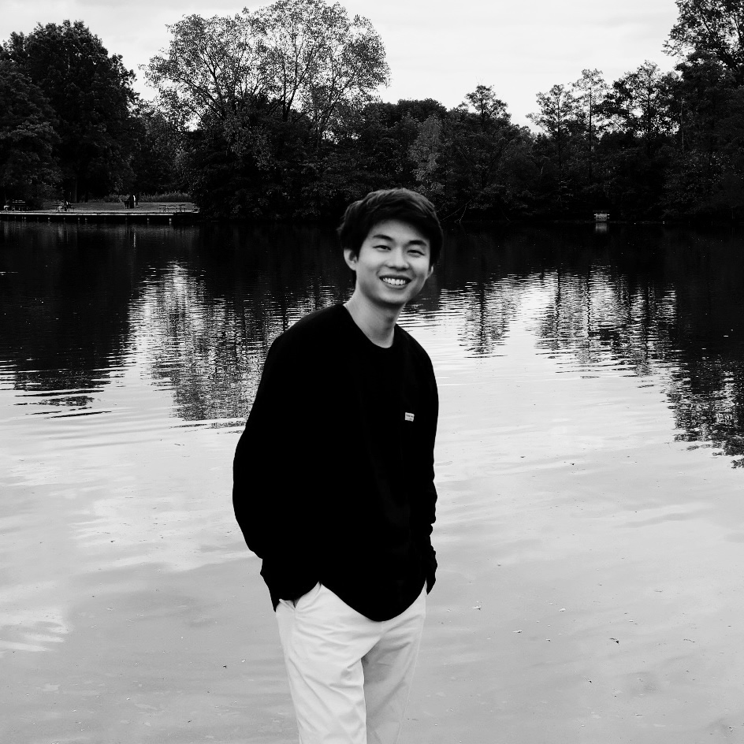
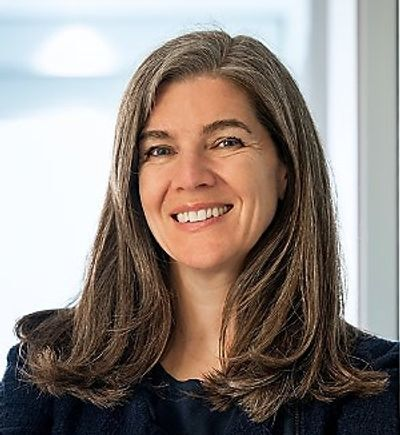
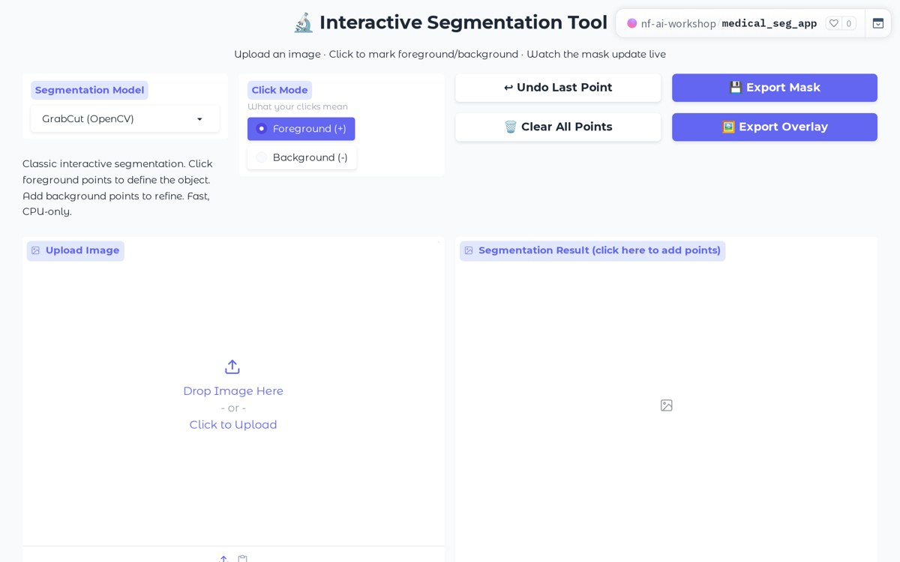
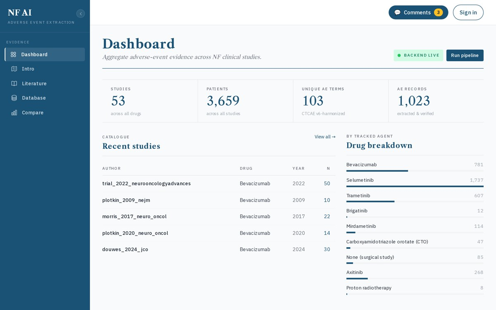

Introduction
This workshop brings together NF researchers, clinicians, and AI experts for a hands-on exploration of how cutting-edge agentic AI — specifically Anthropic's Claude — can accelerate neurofibromatosis and schwannomatosis research today. Rather than waiting for dedicated "AI collaborators," researchers will learn how to directly harness powerful AI tools to advance their own scientific and clinical questions.
The event is structured around a Discovery and Discussion Session anchored by a virtual presentation from Jonah Cool, Head of Life Sciences Partnerships at Anthropic, followed by a focused working session where researchers and teams build proof-of-concept projects with direct support from AI experts.
Goals
- Inspire and educate researchers and clinicians on how cutting-edge agentic AI can be used directly — without necessarily waiting for dedicated AI collaborators.
- Provide a hands-on working environment for interested researchers and clinicians to work directly with AI tools and build actionable proof-of-concept projects.
Resources
- PhD candidates in AI serving as TAs and technical support during working sessions
- Claude trial licenses for interested participants
- Expert coaches including David Zhang (CEO & Founder, Biostate AI) to help researchers shape ideas and scientific questions into actionable projects
Apply to Attend
Interested in attending the NF AI Workshop 2026? Please fill out the form below to let us know — we'll be in touch with more details as the event approaches.
Featured Speakers & Experts



Board of Directors, CTF






Workshop Schedule
| Time | Speaker / Event | Description |
|---|---|---|
| Breakfast & arrival | ||
| 8:00 AM | Breakfast buffetuntil 9:30 AM | Mile High Morning Breakfast buffet served in the Pre-Function Space outside the Energy and Inspire Brilliance Ballrooms · Coffee and hot tea available all day |
| Opening | ||
| 9:00 AM | Haomiao HuangMatter VP | Introduction Welcome and overview of the workshop's goals and structure |
| Annette BakkerCEO, Children's Tumor Foundation | Opening remarks CTF perspective on the promise of AI for NF research | |
| Ken RuddCTF Board · NF1 patient | Opening remarks Patient perspective on the urgency of accelerating NF research | |
| Keynote | ||
| 9:10 AM | Jonah CoolAnthropic · virtual | Claude for life sciences Introduction to agentic AI and how Claude can accelerate NF research — from literature synthesis to experimental design (40 min) |
| Lightning Round I — AI Best in Class: Inspiration from the Frontier | ||
| 9:50 AM | David ZhangBiostate AI | Model training with Claude agents Biostate AI uses multimodal spatial biology data and Claude-powered agents to build foundation models for tissue and cell analysis |
| Chris SadeeStanford University | AI applications in cutaneous neurofibromas AI for the detection, segmentation and classification of cutaneous neurofibromas to discover patterns of development | |
| Anish SimhalMemorial Sloan Kettering | Predicting smoldering myeloma progression from routine bloodwork Using a novel longitudinal transformer framework on blood-based lab values to predict progression from smoldering multiple myeloma to active disease — showing AI can flag high-risk patients earlier and more accurately than traditional risk scores using data collected at every clinic visit | |
| Yubin XieNoetik AI | AI foundation models for cancer target discovery Noetik trains self-supervised models on human multimodal spatial biology data to identify precision immunotherapy targets and predict patient response | |
| Johnny YuTahoe Bio | Single-cell drug response mapping Tahoe's Mosaic platform generates large-scale single-cell atlases tracking how drugs affect diverse patient cells, powering virtual cell models for drug discovery | |
| NF data landscape & discussion | ||
| 10:30 AM | Jaishri BlakeleyDirector, NTAP | NF Patients and Data Overview of NF research datasets that are AI-ready — including longitudinal whole-body digital imaging of cNF, multiparametric MRI for MPNST risk, drug screens against NF1 cell lines, biorepository samples, and radiomics studies — and how AI scientists can partner to unlock insights from this data (10 min) |
| 10:40 AM | All speakers | Open Q&A and discussion Extended audience Q&A and cross-pollination of ideas across the morning's presentations |
| Afternoon — Working Sessions | ||
| 11:00 AM | Shaoxiong YaoUIUC | Visual segmentation using AI Deep learning approaches for segmenting NF-related tissue structures in medical images · Kick-off to the afternoon working session Live demo ↗ |
| Wenzhou DingUIUC | Paper extraction using AI Automated extraction and synthesis of key findings from NF literature to surface insights at scale Live demo ↗ |
|
| 11:30 AM | Lunch (provided)until 1:30 PM | Working Lunch: Taco Bar Pre-Function Space outside the Energy and Inspire Brilliance Ballrooms · Break into groups by skill level and research focus, finalize project scope · Assorted soft drinks available until 2:30 PM |
| 1:00 PM | Build session | Time to build and create Groups work independently on their NF AI projects with coach support — organized by skill level and research theme (4 hours) Claude Code Setup Tutorial ↗ Hello World Project: Build Your Own Paper Reading Tool ↗ |
| 2:00 PM | PM snackuntil 3:00 PM | Assorted fresh cookies Pre-Function Space outside the Energy and Inspire Brilliance Ballrooms |
| 5:00 PM | End of day | Groups wrap up, save work, and prepare for Sunday presentations |
| Time | Session | Description |
|---|---|---|
| 12:15 PM | Selected teamsNF Summit attendees | Workshop project presentations Selected teams from Saturday's workshop present the AI tools and research projects they built — open to all NF Summit attendees |
| 12:45 PM | End | Session closes · return to main NF Summit programming |
Demos
Interactive proof-of-concept tools built with agentic AI for NF research. Click through to try them live.

Visual segmentation using AI
Upload a medical image and segment regions by clicking foreground / background points. GrabCut (OpenCV), CPU-only, with the mask updating live.
Open demo ↗
Paper extraction using AI
Extracts and aggregates adverse-event evidence from NF clinical-study papers: 53 studies, 3,600+ patients, and 103 CTCAE v6-harmonized AE terms.
Open demo ↗Organizers


NF Conference
The Children’s Tumor Foundation’s 2026 NF Conference in Denver, CO is the premier event for the global NF research and clinical community, uniting experts and innovators dedicated to transforming outcomes for patients with NF. This includes NF1 and all types of schwannomatosis (SWN), such as NF2-related schwannomatosis (NF2-SWN), previously known as neurofibromatosis type 2.
Learn More about the NF ConferenceContact
For questions about the NF Conference, please email .